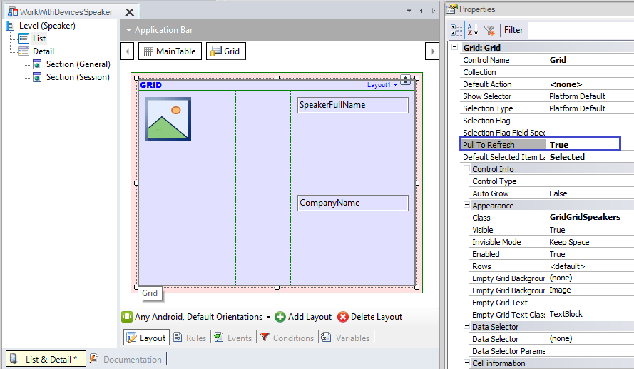
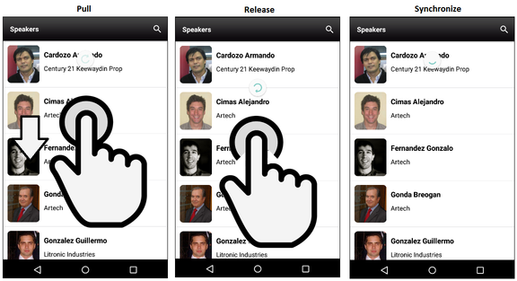
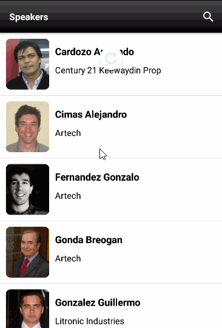
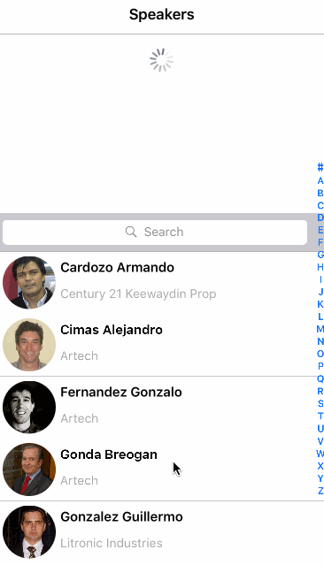

This property is available for grids included in Panels and WWSD.
By setting it to True (its default value is False), the end user will be able to pull down on a list, and after releasing it, the server will check if new data is available. If that's the case, it will proceed synchronizing and displaying the data, without refreshing the entire panel that contains the grid.
Also, It is possible to define an event when the end user releases the list, giving the full control of its behavior to you.
This can be done as shown below:
Event <grid_control_name>.PullRelease
<Business logic>
EndEvent
You can define its business logic conveniently (using Procedures, methods or commands, such as Grid Refresh method, Refresh command, Grid Load method, etc).
Note that this event only works if the Pull To Refresh property is True.
In other words, when you set the property to True and does not write this event, then calls to Grid Refresh event implicitly by default.
But, if this event is written when the property is enabled, then executes its business logic (without calling Grid Refresh event automatically).
In EventDay, suppose you want to apply this UI/UX feature to the list of speakers.
First, open the List section of the WorkWithDevicesSpeaker object and simply define Pull To Refresh property in True.

This feature is considered a common pattern provided in general for Native Mobile applications (like Facebook, Twitter, Instagram). It is also offered by certain browsers (like Chrome) to refresh the web content. An icon with a small animated circle going round is showed to represent the process of refreshing data.

The following demos show the behavior in runtime (note especially for those speakers that appear with last names written in uppercase):
| Android | Apple |
|

|

|
This property is available since GeneXus 15
Objects Panel, Work With for Smart Devices
Control Category:Grid control in Native Mobile.
Languages: .NET, Java
| Backlinks | |
| Infinite scrolling | Toc:Native Mobile Applications Development |
| Refresh Grid event |